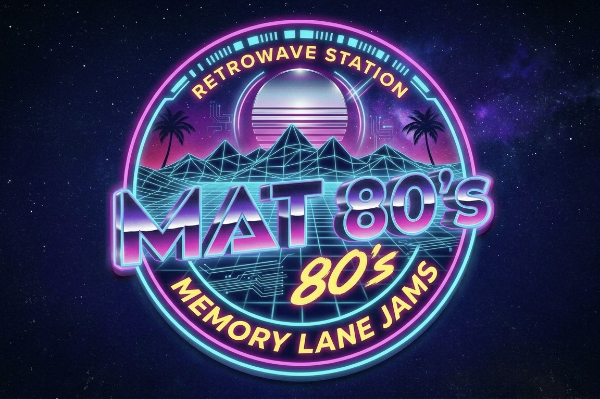

The Tracks
Midnight Drive
Neon Night Drive
Retro Night Drive
The Visuals
80s Synth Journey

Welcome to a space built for the night. This page is dedicated to synthwave inspired by the neon glow of the ‘80s, late-night drives, and the timeless sound of classic and nostalgia. Expect smooth electric pianos, warm pads, and atmospheric tracks designed to slow things down and clear your head. This isn’t just music—it’s a mood. Perfect for night drives, deep focus, or winding down after a long day. If you’re into retro vibes, nostalgic soundscapes, and music that soothes the soul, you’re in the right place. New tracks and visuals drop regularly. Stay connected. 🎧 Best experienced with headphones.
Midnight Drive
Neon Night Drive
Retro Night Drive
80s Synth Journey